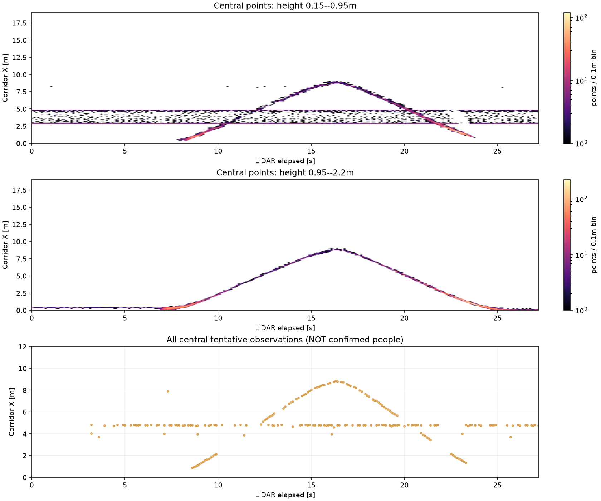

2026-10-22 / group003 / recording003。画像・骨格の到着前に保存済みLiDARだけを解析した段階です。
約2.9 m・4.8 m付近の静止帯と往復する移動点群が見えます。橙色の点は全て未確定候補で、人物・ポール・壁の区別は映像で未確認です。ポールが失敗原因とはまだ断定できません。
時刻はLiDAR先頭からの秒です。
灰色：元点群。橙：候補クラスタの実観測。予測位置は表示しません。廊下座標は録画003の床・壁から独立推定しています。

上2段は点群を高さで分けた分布です。人検出の出力率や真の人物位置ではありません。移動点群の往復は約9 mまで見えます。下段の候補には静止物も混在します。
SDK書き出し後、画像上の人物・ポール・遮蔽区間と照合して最終判定します。ポールを除いた同条件の対照実験ではありません。